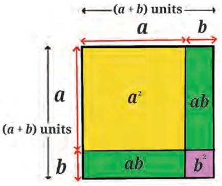

In this section we will revisit some algebraic identities that we have studied in earlier grades and try to visualise them using geometrical models. In particular, we will use squares and rectangles to represent terms.
Consider two line segments of lengths \(a\) and \(b\) units, respectively, and make a longer line segment of length \((a + b)\) units as shown in Fig. 4.1.

We can now construct a square of side \((a + b)\) units and partition it into smaller squares and rectangles as shown in Fig. 4.2.

Observe that the area of the outer square is \((a + b)^2\). The area of the larger square inside the outer square is \(a^2\) while the area of the smaller square is \(b^2\). The areas of the two rectangles are \(ab\) each. Together they make the bigger square; hence we can conclude that
$$(a + b)^2 = a^2 + 2ab + b^2.$$
From Fig. 4.2 it is clear that \((a + b)^2 = a^2 + 2ab + b^2\) for all \(a\) and \(b\) when \(a\) and \(b\) are lengths of line segments.
Think of numbers \(a\) and \(b\) where \(a\) and \(b\) do not represent lengths of line segments. What if \(a\) and \(b\) are negative numbers? Let us check for some negative numbers and see if this equation still works.
Example 2: Let \(a = -2\) and \(b = -3\).
Then \((a + b) = -5\) and \((a + b)^2 = 25\).
Also \(a^2 = 4\), \(b^2 = 9\) and \(2ab = 12\).
Thus \(a^2 + 2ab + b^2 = 4 + 12 + 9 = 25\).
Hence, \(a^2 + 2ab + b^2 = (a + b)^2\) again!
Now suppose \(a\) and \(b\) are rational numbers, say \(a = -\frac{2}{3}\) and \(b = \frac{3}{4}\)
Then \((a + b) = \left(-\frac{2}{3} + \frac{3}{4}\right) = \frac{1}{12}\).
\((a + b)^2 = \frac{1}{144}\).
\(a^2 + 2ab + b^2 = \left(-\frac{2}{3}\right)^2 + 2\left(-\frac{2}{3}\right)\left(\frac{3}{4}\right) + \left(\frac{3}{4}\right)^2\)
\(= \frac{4}{9} - 1 + \frac{9}{16} = \frac{64 - 144 + 81}{144} = \frac{145 - 144}{144} = \frac{1}{144}\).
So, \(a^2 + 2ab + b^2 = (a + b)^2\) seems to be true for rational numbers too. But we are still not sure if it is true for all numbers. To verify this, let us investigate further using the distributive property of numbers:
\((a + b)^2 = (a + b)(a + b) = a(a + b) + b(a + b)\)
\(= a^2 + ab + ba + b^2 = a^2 + 2ab + b^2\).
Recall that in Grade 8 you were introduced to \((a + b)^2 = a^2 + 2ab + b^2\) as an identity. What is the difference between an equation and an identity?
An algebraic identity is an equation that is true for all values of the variables occurring in it, while an equation need not be true for all values.
For example, \(x^2 - 1 = 24\) is true for only \(x = 5\) or \(-5\). Hence, it is an equation.
But \((x + y)^2 = x^2 + 2xy + y^2\) is true for all values of \(x\) and \(y\). Therefore, this equation is also an identity.
By now you must have observed that \((a + b)^2 \ne a^2 + b^2\). But can you find out which one of them will be greater?
For example, if \(a = 10\) and \(b = 2\), what are the values of \((a + b)^2\) and \(a^2 + b^2\)?
\((a + b)^2 = (10 + 2)^2 = 12^2 = 144\) and \(a^2 + b^2 = 10^2 + 2^2 = 104\).
So in this case, \((a + b)^2 > a^2 + b^2\). But is it true for all numbers \(a\) and \(b\)?
Think and Reflect
- What can you say about \(a\) and \(b\) if \((a + b)^2 < a^2 + b^2\)?
- What can you say about \(a\) and \(b\) if \((a + b)^2 > a^2 + b^2\)?
- When will \((a + b)^2\) be equal to \(a^2 + b^2\)?
Did you observe that \((a + b)^2\) and \(a^2 + b^2\) are both positive? What term will decide which is larger? Use the expansion of \((a + b)^2\) to decide.
We can use the identity \((a + b)^2 = a^2 + 2ab + b^2\) to find the square of general binomial expressions.
Example 3: Let us try to expand \((5x + 2y)^2\). Here \(a = 5x\) and \(b = 2y\).
Then \((5x + 2y)^2 = (5x)^2 + 2(5x)(2y) + (2y)^2 = 25x^2 + 20xy + 4y^2\).
We can also use the identity to help us with numerical calculations.
Example 4: To calculate \(43^2\), we can write it as
\((40 + 3)^2 = 40^2 + 2 \times 40 \times 3 + 3^2 = 1600 + 240 + 9 = 1849\).
- Using the identity \((a + b)^2 = a^2 + 2ab + b^2\), expand the following:
- \((7x + 4y)^2\)
- \(\left(\frac{7}{5}x + \frac{3}{2}y\right)^2\)
- \((2.5p + 1.5q)^2\)